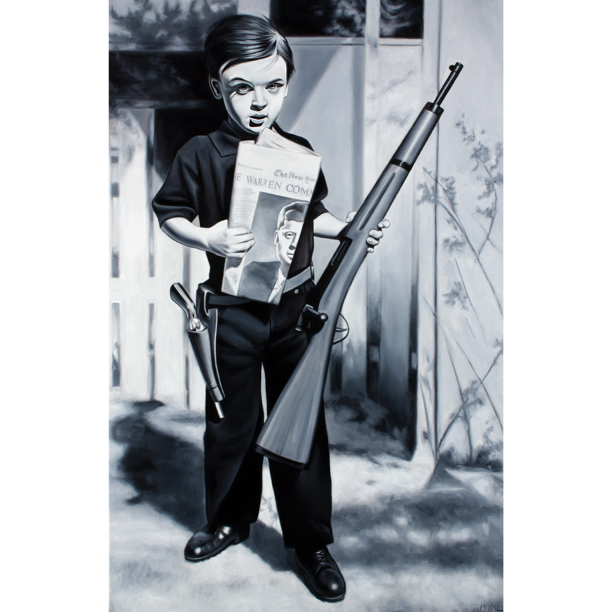
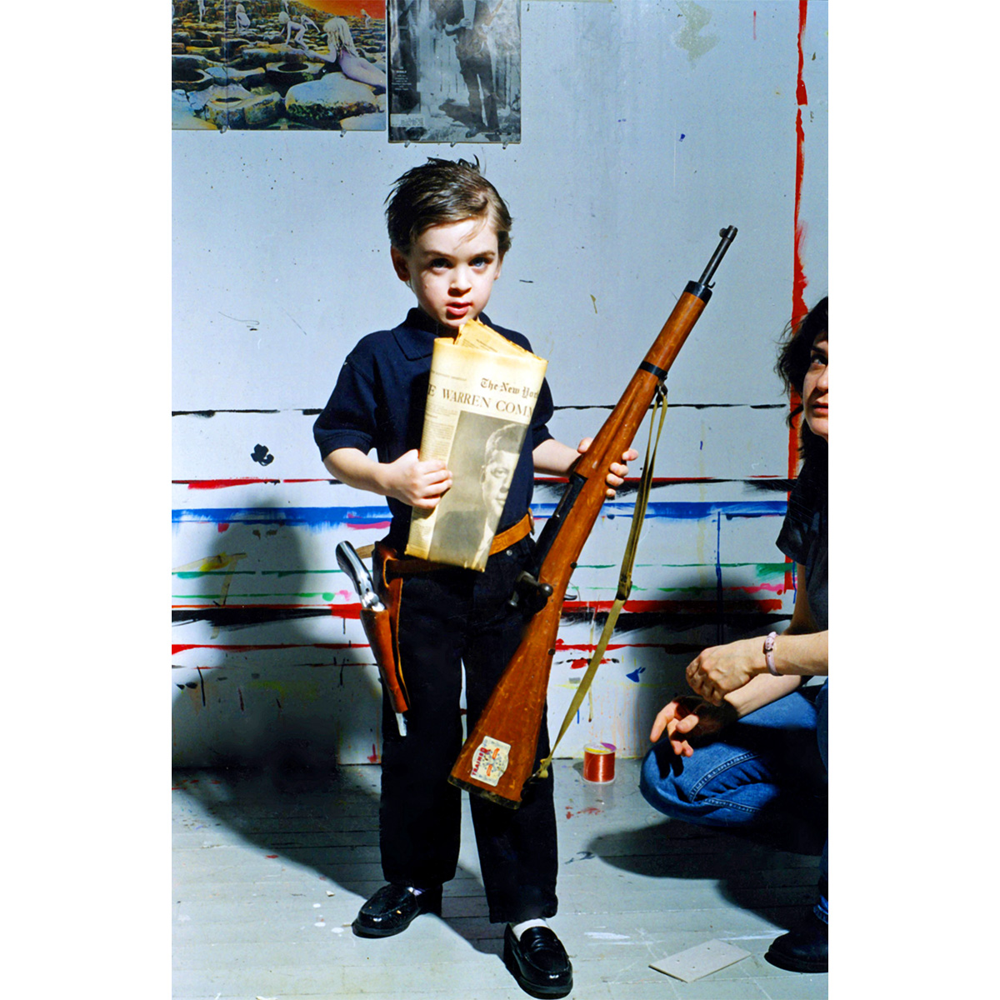

Exhibitions
Big Picture Pop, Opera Gallery, New York, New York, US, November 29–late December, 2007.
Literature
Ron English, Abject Expressionism: The Art of Ron English (San Francisco: Last Gasp, 2002), p. 117. ISBN 978-0867196894.
Ron English, Fauxlosophy: The Art of Ron English (San Francisco: Last Gasp, 2008), p. 26. ISBN 978-0867196566.
Ron English, Son of Pop: Ron English Paints His Progeny (Cotati, CA: 9mm Books, 2007), p. 68. ISBN 978-0976632511.
Notes
This work draws directly from a photographic source. The original image can be viewed here .
